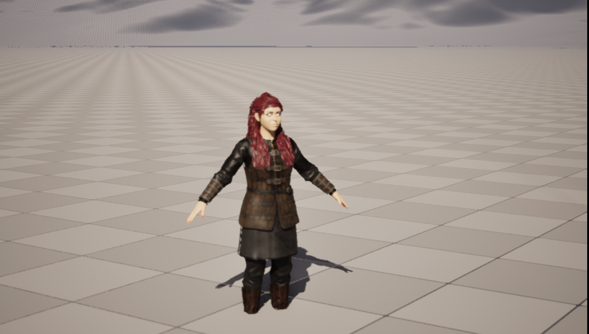

🎥 Cinematics with Sequencer
In the introductory modules, motion happened because gameplay made it happen: a Blueprint reacted to input, a character walked where the player steered it, timing was different every run. A film is the opposite. A shot has to play the same way every time, frame for frame, on a schedule the director controls. The tool that turns Unreal from a game engine into a virtual film set is Sequencer. In this lesson you will meet the Level Sequence and its timeline of tracks and keyframes, set up a Cine Camera and shape its look with focal length, aperture, and focus, and assemble several camera angles into a cut scene with the Camera Cuts track.
🎬 Intermediate Track
This is the second lesson of the Cinematic Production track. It follows directly from Characters & Animation: now that you can put a moving character on screen, Sequencer is where you point a camera at it and direct the shot. It also fills in the exact ground the Shot Assembly and Cinematography pipeline pages assume you already know.
🎯 Learning Objectives
By the end of this lesson, you will be able to:
- Explain what a Level Sequence is and how directed animation in Sequencer differs from gameplay-driven motion
- Read the Sequencer timeline: bindings, tracks, sections, keyframes, and the playback range
- Add a Cine Camera Actor and control its framing with focal length, aperture, and focus
- Assemble a multi-angle scene with the Camera Cuts track, and describe the master-sequence-and-shots structure used at production scale
- Follow a repeatable workflow to block, populate, and refine a cinematic shot
Estimated Time: 35-45 minutes
Prerequisites: Intermediate Lesson 1: Characters & Animation, and the introductory modules (especially 2.4 Static Meshes and Assets). A working Unreal Engine 5.8 project with a character or mannequin to point a camera at.
In This Lesson
From Gameplay to Directed Shots
Everything you animated before this point moved because of gameplay logic. A character walked because a Blueprint read the controller; a door opened because the player overlapped a trigger. That motion is reactive and its timing changes every session. A cinematic is the reverse: the director decides exactly what moves, when, and for how long, and it must replay identically every time. You are no longer writing rules for a system to interpret. You are laying events on a timeline.
📖 Definition
Level Sequence: an asset that stores directed animation as a set of tracks on a timeline. Sequencer is the editor you open it in. Think of it as a video editor's timeline fused with a director's shot list, living inside your Unreal level: it can animate an actor's position, a camera's lens, a light's brightness, a material's color, an object's visibility, and play audio, all keyed to exact frames.
If you have ever used a video editor or a 2D animation tool, the mental model transfers cleanly. Time runs left to right. Things you want to control get their own rows. You mark values at specific moments and the tool fills in the motion between them. What makes Sequencer special is that the "things" are live actors in your 3D level, and the "values" are any property those actors expose.
💡 Where this sits in the pipeline
In the Story-to-Screen pipeline, Sequencer is the assembly stage: characters and props are ready, and now you stage them, point cameras, and build shots. That is the subject of the Phase 5 Shot Assembly page. The next lesson, Rendering Output, then turns the assembled sequence into final frames.
The Level Sequence and Its Timeline
Open a Level Sequence and the Sequencer panel appears with two halves: an outliner on the left listing everything the sequence controls, and a timeline on the right where that control plays out over time. Four ideas make up almost everything you will do here: bindings, tracks, sections, and keyframes.
Bindings: what the sequence controls
An empty sequence controls nothing. To animate an actor you bind it into the sequence, which creates a row for it in the outliner. There are two kinds of binding, and the difference matters:
Possessable vs Spawnable
- Possessable: the sequence takes control of an actor that already exists in the level. The actor lives in the level whether the sequence is playing or not; the sequence just "possesses" it while it runs.
- Spawnable: the sequence owns the actor. Unreal spawns it when the sequence needs it and removes it afterward. Spawnables travel with the sequence, which is handy when a shot needs a prop or camera that should not clutter the level otherwise.
Tracks, sections, and keyframes
Under each binding you add tracks, one per thing you want to animate: a Transform track to move it, an Animation track to play a clip on a character, a visibility track, a material track, and so on. A track holds one or more sections, each a bar covering a span of time. Inside a section you place keyframes: a keyframe records a property's value at a specific frame, and Sequencer interpolates smoothly between one keyframe and the next. Set the camera at position A on frame 0 and position B on frame 120, and you get a 5 second dolly move with two keys.
Some tracks do not belong to any single actor. These sequence-level tracks (also called master tracks) sit at the top of the outliner: the Camera Cuts track that chooses which camera is live, plus Fade and Audio tracks. You will use Camera Cuts in Section 4.
Figure: The Sequencer timeline. The outliner (left) lists sequence-level tracks and per-actor bindings; the timeline (right) shows each track's sections and keyframes · the red playhead marks the current frame, and the shaded band is the playback range.
Two timeline settings round this out. The playback range (the shaded band, bounded by green and red markers) defines where the sequence starts and ends. The display rate sets the frame rate you author in; film work is typically 24 fps, so a 120 frame range is exactly 5 seconds. Here is the same structure as a tree:
💡 What a Level Sequence holds
flowchart TD
LS[Level Sequence asset] --> CC[Camera Cuts track
sequence-level]
LS --> B1[Binding: Cine Camera Actor]
LS --> B2[Binding: Character]
B1 --> T1[Transform track
keyframes]
B2 --> T3[Animation track
walk / idle clip]
B2 --> T4[Transform track
keyframes]
style LS fill:#ede7f6,stroke:#7e57c2
style CC fill:#fff3cd,stroke:#ffc107
Bindings hang off the sequence; tracks hang off bindings; the Camera Cuts track sits at the sequence level because it is about the whole scene, not one actor.
The Cine Camera: Lens, Aperture, Focus
You could point an ordinary Camera Actor at your scene, but cinematics use the Cine Camera Actor, which models a real film camera. Instead of a single "field of view" slider it gives you the controls a cinematographer actually uses, and those controls are what make a frame read as filmic rather than game-like.
📖 Definition
Cine Camera Actor: a camera built around real-world optics. Its key controls are the filmback (sensor size), the focal length in millimeters (which sets how wide or tight the view is), the aperture as an f-stop (which sets depth of field), and the focus distance (which plane is sharp). Together these give you the same creative dials as a physical camera.
Two of these dials do most of the visual work:
- Focal length controls the angle of view. A short focal length (say 18mm) is wide: it takes in a lot of the scene and exaggerates depth. A long focal length (85mm and up) is a telephoto: it is tight, flattens perspective, and isolates the subject. The default cine camera sits around a natural 35mm.
- Aperture (f-stop) controls depth of field, the band of distance that appears sharp. A wide aperture like f/1.4 gives a shallow, dreamy focus with a blurred background; a narrow aperture like f/16 keeps almost everything sharp. Low f-number means shallow focus.
Focus then decides where that sharp band sits. You can set a manual focus distance, or use tracking focus that locks onto an actor and stays sharp as it moves. The diagram shows how focal length and aperture shape the image:
Figure: Focal length sets the angle of view; the aperture (f-stop) sets the depth of field, the band of distance that stays sharp; focus distance places that band on your subject.
To see through a Cine Camera while you work, you pilot it or lock it to the viewport, so the editor view becomes exactly what that camera captures. Frame your subject, dial the focal length and focus, and you have composed a shot. Here is the "Kat" character from Lesson 1, now the Skeletal Mesh SK_Anya, staged on a landscape and framed through a Cine Camera Actor bound in a Level Sequence:

Figure: A shot composed in Sequencer. The SK_Anya character was placed on a stage, bound into a Level Sequence alongside a Cine Camera Actor, and lit from the front · captured from the Unreal level viewport, framed to that camera's pose in the ClaudeTest project.
✅ Pro Tip: animate the lens, not just the camera
Because focal length, aperture, and focus are all animatable properties, they get keyframes just like position. Keying the focus distance from a foreground object to a background one is a rack focus; easing the focal length is a zoom. The Phase 6 Cinematography page leans on exactly these animated camera properties.
Assembling Shots with Camera Cuts
One camera gives you one angle. A scene needs several: a wide to establish, a close-up for emotion, an over-the-shoulder for a conversation. In Sequencer you place several Cine Camera Actors, bind them all, and then let the Camera Cuts track decide which one the audience is looking through at any moment.
📖 Definition
Camera Cuts track: a sequence-level track whose sections each point to a camera binding. Whichever section is under the playhead is the camera the sequence renders through. Laying camera sections end to end is how you cut from one angle to the next, exactly like editing a film.
Editing, then, is just arranging colored bars on that one track. Cut from the wide to the close-up by ending the wide section and starting the close-up section on the same frame. Because the track is on the timeline, your edit is frame-accurate and repeatable.
💡 The Camera Cuts track chooses the live camera
flowchart LR
subgraph Cameras
CA[Cam A
wide 24mm]
CB[Cam B
close-up 85mm]
CC[Cam C
over-shoulder 50mm]
end
CA --> CUT[Camera Cuts track]
CB --> CUT
CC --> CUT
CUT --> OUT[What the audience sees
Cam A → Cam B → Cam C]
style CUT fill:#fff3cd,stroke:#ffc107
style OUT fill:#e8f5e9,stroke:#4CAF50
The three cameras all exist for the whole shot; the Camera Cuts track simply picks which one is live over each span of time.
Scaling up: master sequences and shots
A single Level Sequence is enough for one shot or a short scene. A whole film would be unmanageable in one timeline, so production uses a master sequence that contains a Shots track, where each shot is its own sub-sequence. Each shot holds its own cameras, animation, and timing, and the master stitches them in order. This is the same nesting you saw for sub-sequences, applied to organize an entire edit.
💡 Master sequence and shots
flowchart TD
MS[Master Sequence] --> S1[Shot_010
sub-sequence]
MS --> S2[Shot_020
sub-sequence]
MS --> S3[Shot_030
sub-sequence]
S1 --> D1[its own cameras,
animation, cuts]
S2 --> D2[its own cameras,
animation, cuts]
S3 --> D3[its own cameras,
animation, cuts]
style MS fill:#ede7f6,stroke:#7e57c2
Each shot is edited in isolation, then the master plays them back to back. The Phase 5 Shot Assembly page is built entirely around this master-and-shots structure.
A Repeatable Shot Workflow
Every shot you build in Sequencer follows the same rhythm. Learn it once and it scales from a five second test to a full scene. The figure of SK_Anya above was built with exactly these steps.
The six steps of a shot
- Block the scene. Place your characters and props in the level where the action happens, and rough in the lighting.
- Create a Level Sequence and open it in Sequencer.
- Bind your actors. Add the subject (a character) and a Cine Camera Actor as bindings. Add more cameras if the shot needs coverage.
- Frame the camera. Pilot the Cine Camera, set focal length and focus, and compose the shot.
- Animate. Keyframe the camera's Transform for moves, drop Animation clips onto the character, and key any lens changes.
- Cut and time. Add a Camera Cuts track, set the playback range and a 24 fps display rate, and preview.
That leaves one thing undone: turning the previewed sequence into a finished video file at full quality. Previewing in the editor is not the same as rendering, and doing it properly (with anti-aliasing, warm-up, and the right output settings) is the whole subject of the next lesson.
⚠️ Preview is not final
The editor viewport shows an approximation so it can stay interactive. Motion blur, anti-aliasing, and effects are only fully resolved when you render through the Movie Render Queue. Treat your Sequencer preview as the blocking and timing pass, and expect the final frames to look cleaner. That handoff is Lesson 3: Rendering Output.
Hands-On: Direct Your First Shot
You need only a character or a mannequin and an empty level to practice the entire loop. Work through these steps and you will have a real, replayable shot.
🎬 Exercise: a five second reveal
- Stage it. Drop a character (a mannequin from the Third Person feature works) into your level.
- Make a sequence. From the Cinematics button in the toolbar, add a Level Sequence and open Sequencer.
- Add a camera. Use Sequencer's Create Camera button. It adds a Cine Camera Actor, binds it, and creates a Camera Cuts section pointing at it automatically.
- Bind the character. Select the character in the level and add it to the sequence (a possessable), then drop an idle or walk Animation clip onto its Animation track.
- Frame and key a move. Pilot the camera. On frame 0, set a wide framing and add a Transform keyframe. Move the playhead to frame 120, push in closer, and add a second keyframe. You have a slow push-in.
- Time it. Set the display rate to 24 fps and the playback range to 0–120, then press play in Sequencer and watch your shot.
💡 Hint: nothing animates when I scrub?
Two usual causes. First, make sure you added a keyframe at each end of the move, not just changed the value once (one key holds a constant pose). Second, check you are keying the property on the bound actor's track inside the sequence, not nudging the actor in the level with the sequence closed. The little key icon next to a property in the Details panel adds a keyframe at the current playhead frame.
✅ Reach exercise: cut between two angles
Add a second Cine Camera Actor for a tighter angle and bind it. On the Camera Cuts track, end the first camera's section at frame 60 and start the second camera's section at frame 60. Play it back: the shot now cuts from your wide to your close-up at the halfway point. That single edit is the seed of every scene you will ever assemble.
Knowledge Check
Question 1
What is a Level Sequence?
Correct answer: B · A Level Sequence holds tracks and keyframes that play back on a timeline. Sequencer is the editor for it. Unlike gameplay motion, it is directed and replays identically every time.
Question 2
What is the difference between a possessable and a spawnable binding?
Correct answer: B · A possessable binds an actor that lives in the level independently. A spawnable travels with the sequence: Unreal spawns it while the sequence runs and removes it afterward.
Question 3
On a Cine Camera Actor, which control sets the depth of field (how much of the scene is in sharp focus)?
Correct answer: C · Aperture (the f-stop) controls depth of field. A low f-number like f/1.4 gives shallow focus with a blurred background; a high f-number like f/16 keeps most of the scene sharp. Focal length, by contrast, sets the angle of view.
Question 4
What does the Camera Cuts track do?
Correct answer: A · The Camera Cuts track is a sequence-level track whose sections each point to a camera. Whichever section is under the playhead is the camera the sequence renders through, so laying sections end to end cuts between angles.
Question 5
Your Sequencer preview looks a little rough, with soft edges and approximate effects. What produces the clean, final version?
Correct answer: B · The editor viewport shows an interactive approximation. Final anti-aliasing, motion blur, and effects are resolved by the Movie Render Queue, which is the subject of the next lesson.
Summary
You turned Unreal into a film set. Here is the arc:
Sequencer and the Level Sequence. A Level Sequence stores directed animation on a timeline, edited in Sequencer. Unlike gameplay, it is frame-accurate and repeatable. You bind actors into it (possessable or spawnable), give each binding tracks, fill tracks with sections, and set values with keyframes that interpolate over time.
The Cine Camera. A Cine Camera Actor gives you real optical controls: focal length sets the angle of view, aperture sets depth of field, and focus places the sharp plane. Because they are all animatable, you can rack focus and zoom on the timeline.
Shot assembly. Bind several cameras and let the Camera Cuts track choose which is live over time, which is how you edit. At production scale a master sequence holds a Shots track of sub-sequences, one per shot.
🔑 Key Takeaways
- A Level Sequence stores directed, repeatable animation as tracks on a timeline; Sequencer is its editor
- Bindings (possessable or spawnable) hold tracks; tracks hold sections; sections hold keyframes that interpolate
- A Cine Camera Actor uses real optics: focal length sets angle of view, aperture sets depth of field, focus sets the sharp plane
- The Camera Cuts track decides which camera is live over time; that is how you cut between angles
- At scale, a master sequence contains a Shots track of sub-sequences, one per shot
Where this goes next
Your shot is staged, framed, and cut, but it only exists as a preview inside the editor. The final lesson, Rendering Output, takes that Level Sequence and produces finished frames with the Movie Render Queue: output formats, anti-aliasing and warm-up settings, and the choice between the deferred renderer and path tracing. That is the last step of the Unreal half of the Story-to-Screen pipeline, mapped by the Phase 7 Output page.